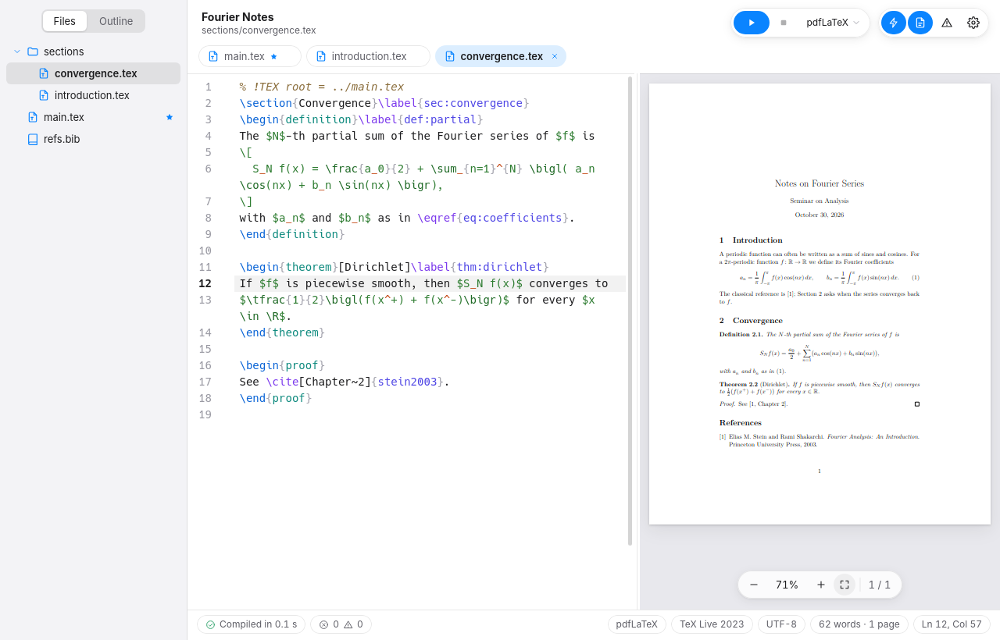
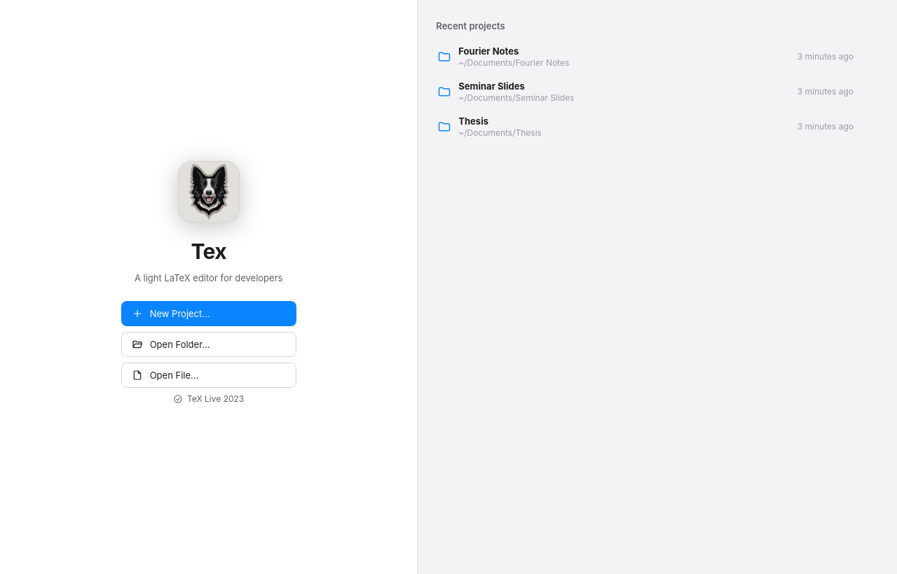

LightLeve
A 2.7 MB package that uses the web view your system already has. No bundled browser, no Electron.Um pacote de 2,7 MB que usa o web view que o sistema já tem. Sem navegador embutido, sem Electron.
A light LaTeX editor for Linux.Um editor LaTeX leve para Linux.
The PDF follows your unsaved text as you type, a click takes you from the PDF to the exact word in the source and back, and every error is underlined on the line that caused it. O PDF acompanha o texto ainda não salvo enquanto você digita, um clique leva do PDF à palavra exata no código e de volta, e cada erro aparece sublinhado na linha que o causou.

The whole project in one window: the files, the source, and the PDF compiling live beside it.O projeto inteiro numa janela: os arquivos, o código e o PDF compilando ao vivo ao lado.
Most LaTeX documents are a main.tex, one file per chapter, figures and a .bib. Tex is built for that, and stays out of the way.A maioria dos documentos LaTeX é um main.tex, um arquivo por capítulo, figuras e um .bib. O Tex foi feito para isso, e não atrapalha.
A 2.7 MB package that uses the web view your system already has. No bundled browser, no Electron.Um pacote de 2,7 MB que usa o web view que o sistema já tem. Sem navegador embutido, sem Electron.
TeX runs in a private cache: no .aux, .log or .synctex.gz next to your sources, and unsaved text compiles without touching the disk.O TeX roda num cache privado: nada de .aux, .log ou .synctex.gz ao lado dos fontes, e o texto não salvo compila sem tocar no disco.
About a second after you stop typing, the PDF shows the change and errors are underlined on the right line of the right file.Cerca de um segundo depois que você para de digitar, o PDF mostra a mudança e os erros aparecem na linha certa do arquivo certo.
Double-click a word in the PDF and the editor lands on that exact word. Ctrl-click in the editor, or press CtrlShiftJ, to go the other way.Dê um duplo clique numa palavra do PDF e o editor vai até essa palavra. Ctrl+clique no editor, ou CtrlShiftJ, para ir no sentido contrário.
% !TEX root = ../main.tex
\section{Homology}\label{sec:homology}
Let $K$ be a simplicial complex.
The boundary operator is
\begin{equation}
\partial_n [v_0,\dots,v_n]
= \sum_i (-1)^i [\dots,\hat v_i,\dots]
\end{equation}
and it satisfies $\partial^2 = 0$.
% !TEX root = ../main.tex
\section{Homologia}\label{sec:homologia}
Seja $K$ um complexo simplicial.
O operador bordo é
\begin{equation}
\partial_n [v_0,\dots,v_n]
= \sum_i (-1)^i [\dots,\hat v_i,\dots]
\end{equation}
e satisfaz $\partial^2 = 0$.
Let K be a simplicial complex. The boundary operator is
∂n[v0, …, vn] = Σi (−1)i [… , v̂i, …]
and it satisfies ∂² = 0.
Seja K um complexo simplicial. O operador bordo é
∂n[v0, …, vn] = Σi (−1)i [… , v̂i, …]
e satisfaz ∂² = 0.
Try it: click a highlighted word on either side.Experimente: clique numa palavra de qualquer um dos lados.
Errors show up underlined at the right line, before you even save.Os erros aparecem sublinhados na linha certa, antes mesmo de salvar.
latexmk runs in the main file's own folder, so \input, figures and .bib resolve as they do on disk, but every output goes to ~/.cache/tex-editor.O latexmk roda na pasta do arquivo principal, então \input, figuras e .bib resolvem como no disco, mas toda a saída vai para ~/.cache/tex-editor.
TeX and BibTeX messages, undefined references, duplicate labels and missing citations are underlined where they happen and collected in the Issues panel.Mensagens do TeX e do BibTeX, referências indefinidas, rótulos duplicados e citações ausentes ficam sublinhados onde acontecem e reunidos no painel de Problemas.
pdfLaTeX, XeLaTeX or LuaLaTeX from a % !TEX program comment, the project or the default; the main file from % !TEX root, your choice or automatic detection.pdfLaTeX, XeLaTeX ou LuaLaTeX por um comentário % !TEX program, pelo projeto ou pelo padrão; o arquivo principal por % !TEX root, pela sua escolha ou por detecção automática.
Press F5: Beamer slides full screen on the projector, and on your screen the current and next slide, your notes, a timer and the clock.Aperte F5: os slides Beamer em tela cheia no projetor e, na sua tela, o slide atual e o próximo, suas notas, um cronômetro e o relógio.
Beamer notes are split for you: the slide goes to the audience, the notes to the presenter view.As notas do Beamer são separadas para você: o slide vai para a plateia, as notas para a visão do apresentador.
Arrows, Space and Page Down move through the slides, a number and Enter jump to one, B blanks the screen and Esc ends.Setas, Espaço e Page Down avançam, um número e Enter vão direto a um slide, B apaga a tela e Esc encerra.
Without a projector the slides go full screen and P shows the presenter view on top.Sem projetor, os slides vão para tela cheia e P mostra a visão do apresentador por cima.
Open any folder, or a .tex to open its folder, or start a new project from a template. Recent projects wait on the Welcome screen.Abra qualquer pasta, ou um .tex para abrir a pasta dele, ou comece um projeto novo a partir de um modelo. Os projetos recentes ficam na tela de boas-vindas.

CtrlP jumps to any file in the project; keep the ones you use in tabs.CtrlP vai a qualquer arquivo do projeto; mantenha os que você usa em abas.
Sections, frames and labels from every included file, in one outline.Seções, frames e rótulos de todos os arquivos incluídos, num só sumário.
Commands, environments, \ref labels, \cite keys, files, packages, and the commands your own project defines. Math commands first inside math.Comandos, ambientes, rótulos em \ref, chaves em \cite, arquivos, pacotes e os comandos que o seu projeto define. Dentro de matemática, comandos de matemática primeiro.
CtrlShiftP finds any command by name. Every shortcut can be changed in Settings.CtrlShiftP encontra qualquer comando pelo nome. Todo atalho pode ser alterado nas Configurações.
Operators, visual modes, :w and :make. Dead keys on ABNT2 just work.Operadores, modos visuais, :w e :make. Teclas mortas no ABNT2 funcionam.
CtrlS or CtrlB writes the PDF beside the main file. The preview reloads without flashing and keeps its place.CtrlS ou CtrlB grava o PDF ao lado do arquivo principal. A prévia recarrega sem piscar e mantém a posição.
For the whole document, in the status bar.Do documento inteiro, na barra de status.
Follows the system theme, or pick one in Settings.Segue o tema do sistema, ou escolha um nas Configurações.
The interface follows your system language: English or Brazilian Portuguese.A interface segue o idioma do sistema: inglês ou português do Brasil.
For Debian, Ubuntu, Linux Mint and their relatives (amd64).Para Debian, Ubuntu, Linux Mint e derivados (amd64).
From the latest release on GitHub.Na versão mais recente no GitHub.
apt also brings latexmk and a basic TeX Live if they are missing.O apt também instala o latexmk e um TeX Live básico, se faltarem.
sudo apt install ./Tex_0.1.4_amd64.deb
Tex is in the system menu under Office, or from a terminal:O Tex fica no menu do sistema, em Escritório, ou pelo terminal:
tex-editor ~/thesis
Why tex-editor? Because tex is TeX itself (/usr/bin/tex, from TeX Live). For biblatex with biber, also install biber; missing LaTeX packages come from apt (texlive-latex-extra, texlive-science…). To uninstall: sudo apt remove tex.
Por que tex-editor? Porque tex é o próprio TeX (/usr/bin/tex, do TeX Live). Para biblatex com biber, instale também o biber; pacotes LaTeX que faltarem vêm do apt (texlive-latex-extra, texlive-science…). Para desinstalar: sudo apt remove tex.
| ActionAção | ShortcutAtalho | ActionAção | ShortcutAtalho |
|---|---|---|---|
| CompileCompilar | Ctrl B | Command palettePaleta de comandos | Ctrl Shift P |
| SaveSalvar | Ctrl S | Quick OpenAbertura rápida | Ctrl P |
| Show in PDFMostrar no PDF | Ctrl Shift J | Next issuePróximo problema | F8 |
| Start presentationIniciar apresentação | F5 | Toggle sidebarMostrar/ocultar barra lateral | Ctrl Alt B |